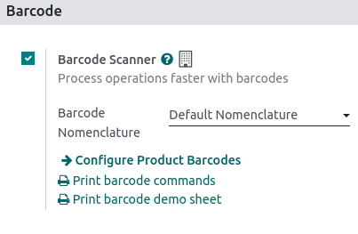

Barcodes¶
Using a barcode scanner to process point-of-sale orders improves your efficiency in providing quicker customer service. Barcode scanners can be used both to scan products or to log employees into a POS session.
Configuration¶
To use a barcode scanner, you must enable the feature in the Inventory app. Go to , in the Barcode section, tick Barcode Scanner and save.
Once enabled in Inventory, you can use the barcode feature in Point of Sale with products that have a barcode number assigned.
Assign barcodes¶
To your products¶
To use this feature in POS, your products must have barcodes assigned. To do so, go to and open a product form. Add a barcode number in the Barcode field in the General Information tab.
To your employees¶
To add an identification number to an employee, go to the Employees app and open an employee form. Choose an identification number for your employee and fill in the PIN Code field in the HR Settings tab.
Use barcodes¶
Scan products¶
Scan a product’s barcode using a barcode scanner. Doing so adds it directly to the cart. To change the quantity, scan a product as many times as needed, or click Qty and enter the number of products using the keypad.
You can also enter the barcode number manually in the search bar to look for the product. Then, click it to add it to the cart.
Log employees¶
You can also use a barcode scanner to log your employees. To do so, restrict access to the POS and use barcodes to log your employees in your POS.